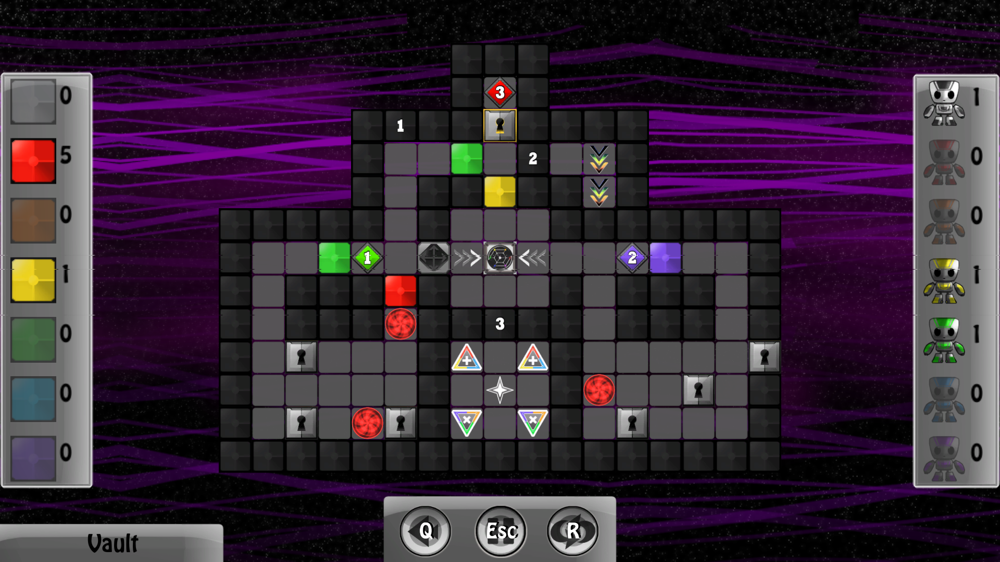
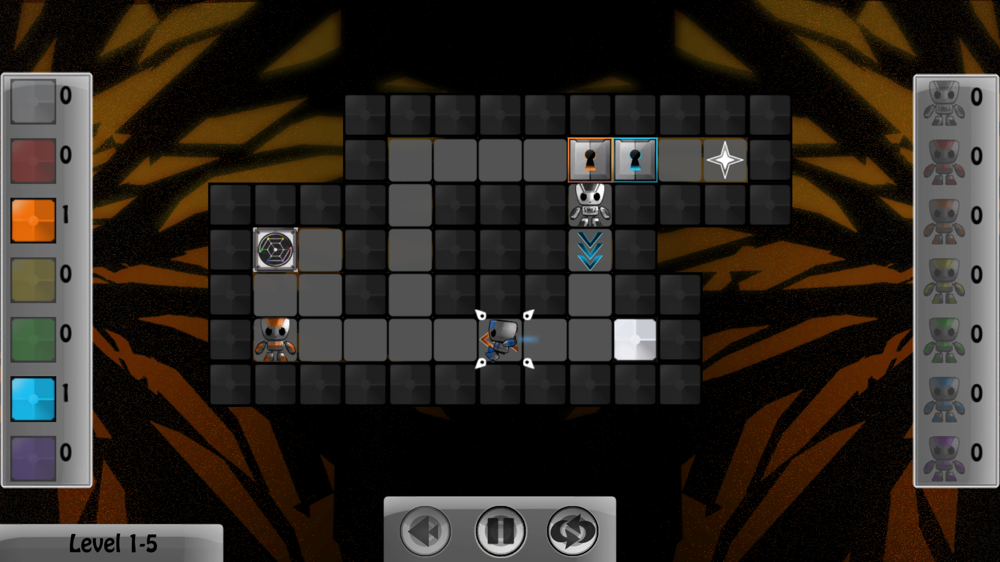
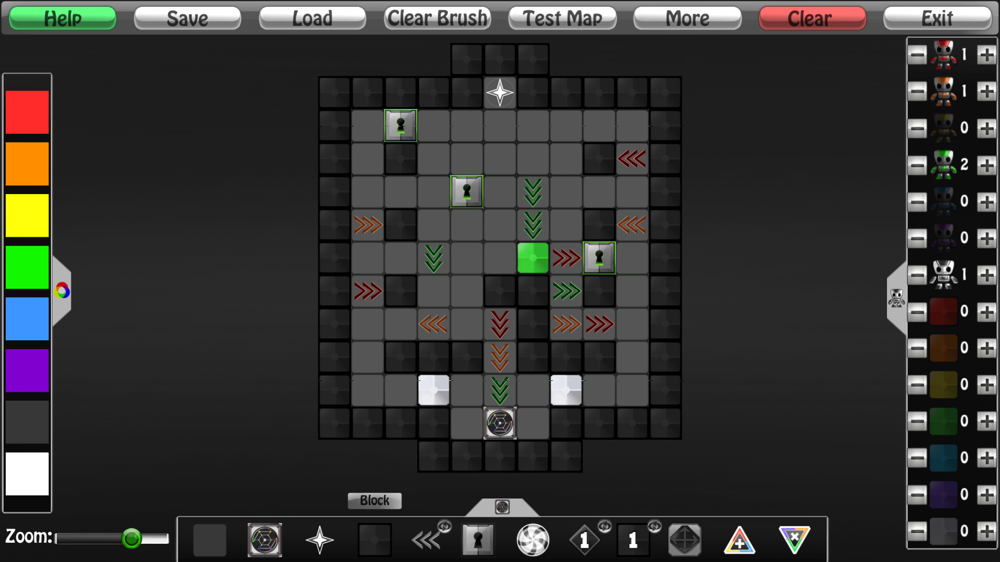
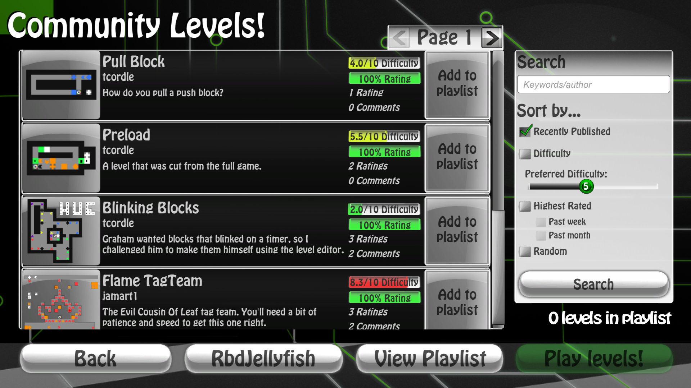
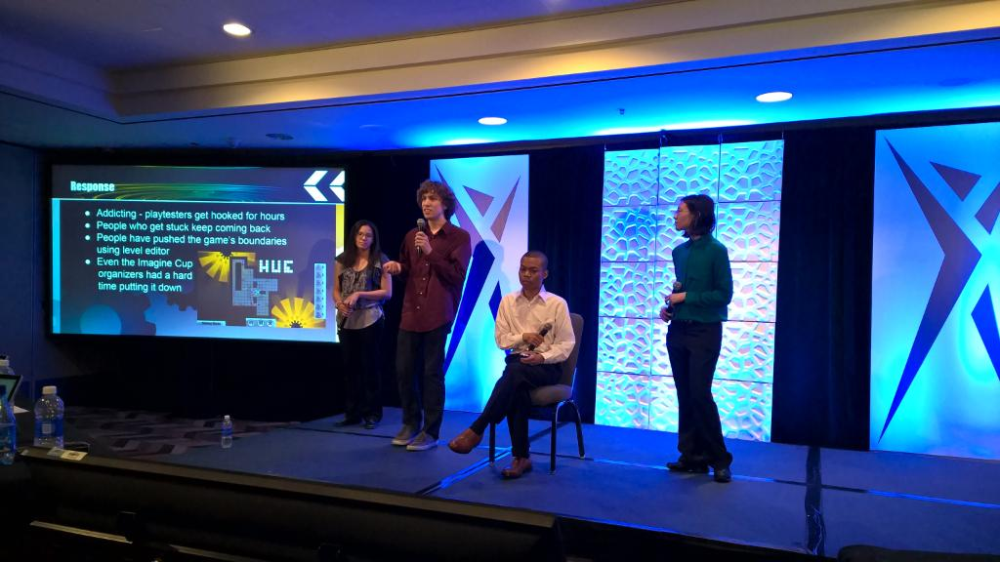

HueBots |
|
|
Design, programming, and sound/music by Tad Cordle Art and animation by Jasmine Martin and Erica Schumacher Production, business management, and additional programming by Michael Leung Additional art by Graham Dolle The full game is available for download on Steam and itch.io. HueBots is a top-down puzzle game in which you control a team of robots that only interact with items that match their color. Open doors, shift colors, and create paths through each level to help your black and white robot reach the finish!   The game features over 100 carefully designed levels, an in-game level editor, and an online level publishing+sharing system, which you can use to play, rate, and comment on your favorite levels.   The game was a national finalist in the 2015 Microsoft Imagine Cup, where the dev team presented the game to a panel of judges and demoed the game at a small expo. The game has also been shown at MAGFest and Gamescape in Baltimore, where it received very positive feedback.  HueBots is my first commercial project (and so far, only; at least until I finish Sensorium?), and took a little under a year to finish. The game was prototyped in XNA during a 48 hour game jam and was ported and finished in Unity 5. |